Amour
Le Soleil en amour
Bonheur partagé, complicité, relation au grand jour.
Arcane majeur XVIIII · joie, réussite, clarté
Deux enfants se tiennent sous un grand soleil rayonnant. C'est la carte la plus positive du tarot : joie, réussite, amitié, transparence et énergie vitale.
Amour
Bonheur partagé, complicité, relation au grand jour.
Travail
Succès, reconnaissance, collaboration heureuse.
Oui ou non
Le Soleil est plutôt un oui.
Le conseil de Le Soleil
Montrez-vous sans masque : c'est votre force.
Bonheur partagé, complicité, relation au grand jour.
Succès, reconnaissance, collaboration heureuse.
Dans un tirage oui ou non, Le Soleil est traditionnellement plutôt un oui. Le sens dépend toujours de la question posée et des cartes voisines.
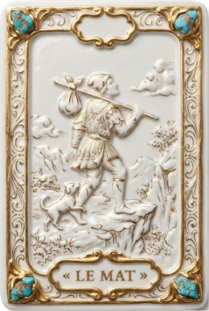
liberté, élan, imprévu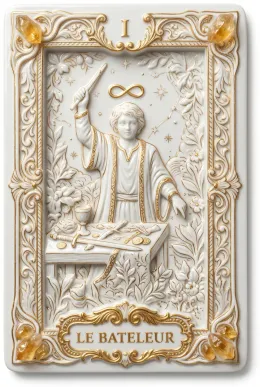
commencement, habileté, initiative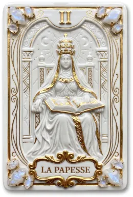
sagesse, secret, patience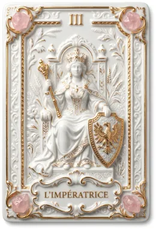
créativité, féminité, expression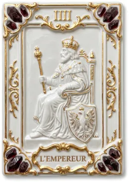
stabilité, autorité, structure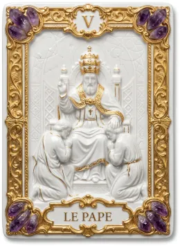
transmission, conseil, valeurs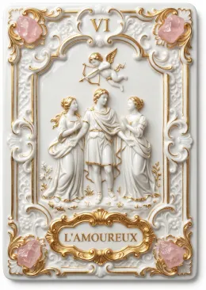
choix, cœur, relations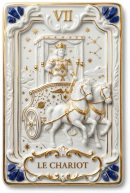
victoire, mouvement, maîtrise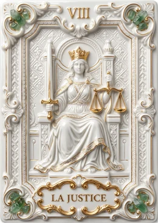
équilibre, vérité, décision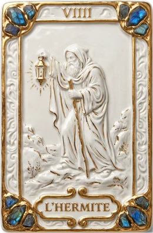
recul, sagesse, introspection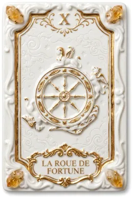
cycle, changement, chance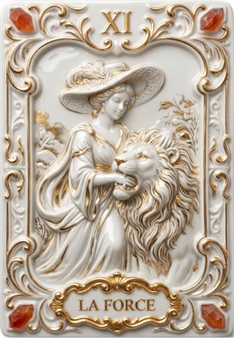
courage, maîtrise, douceur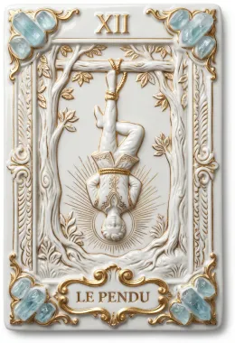
pause, lâcher-prise, nouveau regard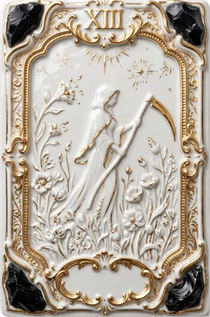
transformation, fin, renouveau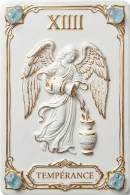
harmonie, patience, guérison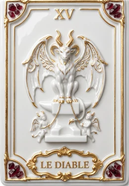
désir, attachement, pouvoir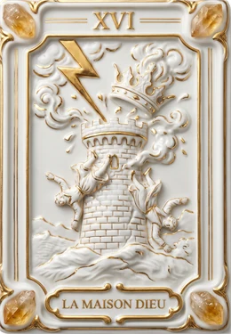
rupture, révélation, libération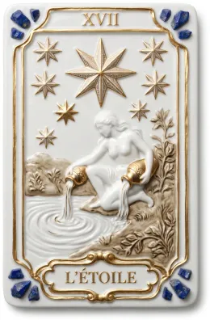
espoir, inspiration, guérison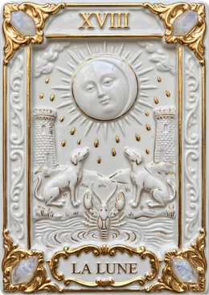
intuition, rêve, doute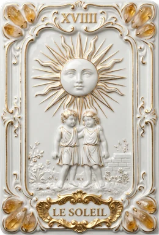
joie, réussite, clarté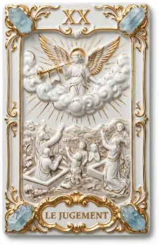
renaissance, appel, éveil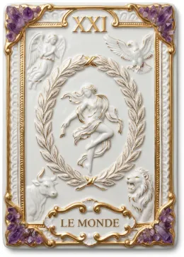
accomplissement, réussite, plénitude